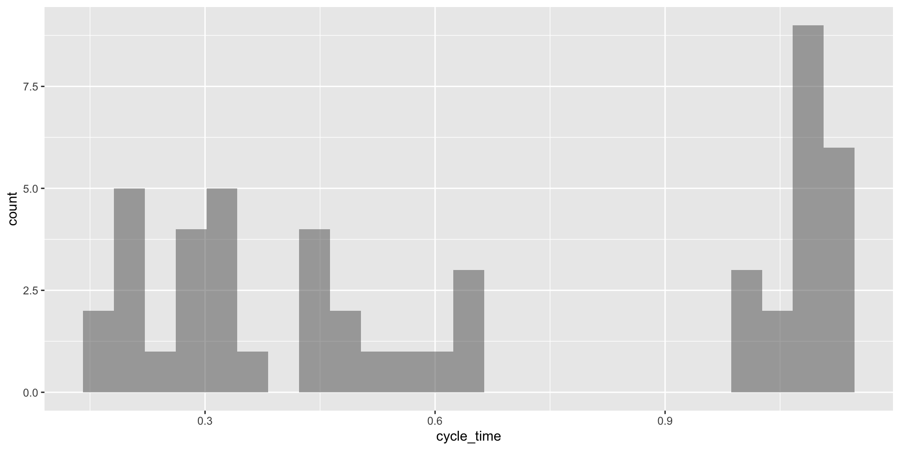

# Nos se te olvide instalar la librería "ggformula" en Google Colab.
# install.packages("ggformula")
library(readxl)
library(ggplot2)
library(ggformula)
library(dplyr)Variables Numéricas
IN2039: Visualización de Datos
Agenda
Enfocarnos en 1 variable numérica.
Introducción al ejemplo
Resúmenes estadísticos
Gráficas de variables numéricas
Ejemplo
Un pistón es un dispositivo mecánico presente en la mayoría de los motores.

Una medida del rendimiento de un pistón es el tiempo que lleva en completar un ciclo, lo cual llamamos “tiempo de ciclo” y se mide en segundos.
El archivo “CYLT.xlsx” contiene 50 tiempos de ciclo de un pistón operado en condiciones de funcionamiento fijas.
Recuerda cargar las librerías
Aquí usaremos las librerías ggplot2, ggformula, readxl, y dplyr.
Carguémoslas en Google Colab y R antes de comenzar.
Carga los datos
En Google Colab, el archivo “CYLT.xlsx” debe de estar en la carpeta llamada “content” o “contenido.”
# Leer los datos.
piston_data = read_excel("CYCLT.xlsx")
# Ver las primeras 6 observaciones.
piston_data %>% head()# A tibble: 6 × 1
cycle_time
<dbl>
1 1.01
2 1.10
3 1.12
4 0.423
5 1.02
6 1.07 Tipo de variable
En R, los datos numéricos se llaman dbl.
# A tibble: 6 × 1
cycle_time
<dbl>
1 1.01
2 1.10
3 1.12
4 0.423
5 1.02
6 1.07 Vemos que R si reconoce nuestros datos correctamente.
Resúmenes estadísticos
Resumen estadístico
Nos ayuda a resumir un conjunto de observaciones de una manera simple.
. . .
Los resúmenes estadísticos más utilizados para datos numéricos son:
- Promedio
- Varianza y desviación estándar
- Mediana y cuartiles
- Máximo y mínimo
Promedio
Indica el centro de las observaciones.
Para calcularlo, considera \(n\) observaciones denotadas como \(y_1, y_2, \ldots, y_n\).
El promedio es
\[\bar{y} = \frac{1}{n}\sum_{i=1}^{n} y_i = \frac{y_1 + y_2 + \cdots + y_n}{n}.\]
En R, el promedio se calcula usando las funciones summarise() y mean().
piston_data %>%
summarise("Promedio" = mean(cycle_time))# A tibble: 1 × 1
Promedio
<dbl>
1 0.652. . .
Interpretación: En promedio, el pistón tarda 0.652 segundos en completar un ciclo.
Varianza
Indica que tan dispersos están las observaciones.
. . .
Para calcularla, considera \(n\) observaciones denotadas usando \(y_1, y_2, \ldots, y_n\) . La varianza es
\[ s^2 = \frac{1}{n-1} \sum_{i=1}^{n} (y_i - \bar{y})^2 = \frac{(y_1 - \bar{y})^2 + \cdots + (y_n - \bar{y})^2}{n-1} \]
. . .
Es como un promedio de las diferencias al cuadrado entre las observaciones y el promedio.
En R, la varianza se calcula usando las funciones summarise() y var().
piston_data %>%
summarise("Varianza" = var(cycle_time))# A tibble: 1 × 1
Varianza
<dbl>
1 0.139. . .
Interpretación: La varianza de los tiempos de ciclo del pistón es 0.139.
Entre mas grande la varianza, mayor la dispersión de los datos alrededor del promedio (centro).
Desafortunadamente, la varianza no está en las mismas unidades que las observaciones, ya que las diferencias entre cada observación y el promedio se elevan al cuadrado.
Por ejemplo, el promedio es 0.652 segundos mientras que la varianza es 0.139 segundos\(^2\).
Desviación estándar
Para obtener una medida de dispersión cuyas unidades sean las mismas que las de las observaciones, tomamos la raíz cuadrada de la varianza:
\[ s = \left(\frac{1}{n-1} \sum_{i=1}^{n} (y_i - \bar{y})^2 \right)^{1/2} \]
Esta es la desviación estándar, que esta en las mismas unidades que las observaciones. Es como la distancia promedio entre las observaciones y el promedio.
En R, la desviación estándar se calcula usando las funciones summarise() y sd().
piston_data %>%
summarise("Desv.Std" = sd(cycle_time))# A tibble: 1 × 1
Desv.Std
<dbl>
1 0.373. . .
Interpretación: En promedio, un pistón tarda 0.652 segundos en completar un ciclo, con una diferencia de mas o menos 0.373 segundos.
O, la diferencia promedio entre los tiempos de ciclo de un pistón y su tiempo promedio es de 0.373 segundos.
Mediana y Cuartiles
La mediana es el número medio de las observaciones ordenadas de menor a mayor.
. . .
Los cuartiles dividen las observaciones en cuatro partes. Existen tres de ellos:
El primer cuartil (\(Q_1\)) es la mediana de la mitad inferior de las observaciones.
El segundo cuartil (\(Q_2\)) es la mediana de las observaciones.
El tercer cuartil (\(Q_3\)) es la mediana de la mitad superior de las observaciones.
En R, la mediana se calcula con las funciones summarise() y median().
piston_data %>%
summarise("Mediana" = median(cycle_time))# A tibble: 1 × 1
Mediana
<dbl>
1 0.546Interpretación: El 50% de los tiempos de ciclo del pistón es menor que 0.546 segundos.
Los cuartiles se calculan con las funciones quantile() y reframe(). Como la función quantile da 5 valores, es mejor usar reframe() que summarise() en este caso summarise() trabaja con funciones cuya salida es un valor.
piston_data %>%
reframe("Value" = quantile(cycle_time)) %>%
mutate("Quantile" = c(0, 0.25, 0.5, 0.75, 1))# A tibble: 5 × 2
Value Quantile
<dbl> <dbl>
1 0.175 0
2 0.305 0.25
3 0.546 0.5
4 1.07 0.75
5 1.14 1 Interpretación: El 25%, 50% y 75% de los tiempos de ciclo del pistón es menor que 0.305, 0.546 y 1.07 segundos, respectivamente.
Máximo y mínimo
Otros estadísticos relevantes son el máximo y el mínimo, que se calculan con las funciones max() y min(), respectivamente.
piston_data %>% summarise("Maximo" = max(cycle_time))# A tibble: 1 × 1
Maximo
<dbl>
1 1.14Interpretación: El tiempo de ciclo máximo del pistón es 1.14 segundos.
piston_data %>% summarise("Minimo" = min(cycle_time))# A tibble: 1 × 1
Minimo
<dbl>
1 0.175Interpretación: El tiempo de ciclo mínimo del pistón es 0.175 segundos.
Alternativamente…
También podemos usar la función summary() para dar un vistazo rápido a los quartiles de una variable.
piston_data %>% summary() cycle_time
Min. :0.1750
1st Qu.:0.3050
Median :0.5455
Mean :0.6525
3rd Qu.:1.0690
Max. :1.1410 Promedio contra Mediana
El promedio y la mediana estiman el valor central de los datos de diferentes maneras.
El promedio es la suma de los valores dividido por el total.
La mediana es el valor central de un conjunto de datos ordenado.
¿Cuándo usamos el promedio?
El promedio se usa cuando los datos están distribuidos de manera simétrica o uniforme y no hay valores atípicos significativos.
Por ejemplo, la estatura de una muestra grande de personas en una población homogénea.
¿Cuándo usamos la mediana?
La mediana se usa cuando cuando hay valores atípicos que podrían sesgar la media.
Por ejemplo:
Ingresos anuales de los hogares en un país (donde hay pocos multimillonarios que distorsionan la media).
Precio de viviendas en una ciudad (donde unas pocas propiedades muy caras pueden inflar la media).
Actividad (solo mode) Parte 1
Una empresa fabricante de pernos de retención de condensadores para motores de automóviles implementó un sistema de control de calidad. Como parte de este sistema de control de calidad, un equipo de ingenieros decidió registrar la cantidad de pernos no conformes producidos en cada turno.
El archivo bolts.xlsx contiene la cantidad de pernos no conformes durante los últimos 45 turnos.
- Calcula e interpreta el promedio, varianza, desviación estándar, cuartiles, mínimo y máximo.
15:00
Gráficas para datos numéricos
Principio 1
Formula la pregunta de interés.
. . .
Las preguntas típicas sobre una variable numérica \(X\) son:
¿Cuál es la forma de las observaciones de la variable \(X\)?
¿Existen observaciones inusuales o atípicas en la variable \(X\)?
¿La forma de las observaciones de la variable \(X\) se parece a una campana?
Principio 2
Transforma los datos en información.
. . .
Dos tipos comunes de gráficas para visualizar una variable numérica son:
- Histograma.
- Gráfica de cajas.
. . .
Básicamente, son maneras distintas de visualizar la “forma” o distribución de la variable.
Histograma
Visualiza la distribución de las observaciones, indicando regiones donde las observaciones están concentradas o son escasas.
. . .
Se construye usando una tabla de frecuencia.
- Define un número máximo de intervalos o bins (de 5 a 30).
- Define los rangos de los intervalos.
- Agrupa las observaciones en el intervalo que pertenecen.
. . .
R calcula automáticamente la tabla de frecuencia para datos numéricos. El histograma es una visualización de esta tabla.
En ggplot2, puedes construir un histograma usando el siguiente comando.
gf_histogram( ~ cycle_time, data = piston_data) 
Las barras del histograma se tocan entre sí. Un espacio indica que no hay observaciones en ese intervalo.
Mejora la gráfica
Para transmitir un mejor mensaje, aplicamos el Principio 3: Aplica los principios de diseño gráfico.
gf_histogram( ~ cycle_time, data = piston_data, color = "black",
fill = "white") + labs(title = "Histograma de tiempo de ciclo",
x = "Tiempo de ciclo (segundos)", y = "Frequencia",
caption = "Datos de 50 pistones") + theme_bw()No es lo mismo que una gráfica de barras
Con datos categóricos, la gráfica de barras se parece al histograma porque presenta la frecuencia de las categorías.
Sin embargo, no podemos interpretar la forma la gráfica de barras igual que un histograma.
La frecuencia de una categoría está representada por la altura de la barra y el ancho no contiene información.
Una gráfica de barras no te señalará valores atípicos.
Tails and symmetry do not make sense in this setting.
Número de intervalos
- El número de intervalos es un parámetro del histograma que afecta su aspecto.
Este se fija usando el argumento bins en la función gf_histogram().
gf_histogram( ~ cycle_time, data = piston_data, bins = 5,
color = "black", fill = "white")El histograma izquierdo usa bins = 5 y el histograma derecho usa bins = 30.
Code
gf_histogram( ~ cycle_time, data = piston_data, bins = 5,
color = "black", fill = "white") + labs(title = "Histograma de tiempo de ciclo", x = "Tiempo de ciclo (segundos)", y = "Frequencia", caption = "Datos de 50 pistones")Code
gf_histogram( ~ cycle_time, data = piston_data, bins = 30,
color = "black", fill = "white") + labs(title = "Histograma de tiempo de ciclo", x = "Tiempo de ciclo (segundos)", y = "Frequencia", caption = "Datos de 50 pistones")En este curso, usaremos el número de bins dado por default.
The histogram is a familiar type of plot that uses smoothing. A histogram aggregates data values by putting points into bins and plotting one bar for each bin. Smoothing here means that we cannot differentiate the location of individual points in a bin: the points are smoothly allocated across their bins.
¿Qué buscar en un histograma?
- La simetría y la asimetría de la distribución
- El número, ubicación y tamaño de las regiones (intervalos) de alta frecuencia.
- Brechas donde no se observan valores.
- Valores inusualmente grandes o anómalos.
- Una forma de campana.
La obsesión con las campanas
La distribución normal es una distribución de probabilidad muy importante en estadística.

Se caracteriza por tener una forma de campana simétrica alrededor de su media, con la mayor densidad de probabilidad centrada en la media y disminuyendo simétricamente hacia los extremos.
Básicamente, si tus observaciones siguen una distribución normal, puedes utilizar métodos estadísticos para sacar conclusiones fundamentadas por teoría matemática.

Lo que mucha gente no sabe es que esta condición se necesita solo si tienes pocas observaciones (menos de 50).
Gáfica de caja
Una gráfica de caja nos ayuda a visualizar la distribución de las observaciones usando cuartiles.
. . .
Es muy efectiva para detectar “valores atípicos”.
. . .
Un componente importante de la gráfica es el rango intercuartil (IQR), que es la diferencia entre el tercer cuartil y el primer cuartil (\(Q_3 - Q_1\)).
. . .
El rango intercuartil es la distancia necesaria para abarcar la mitad media de los datos.
Anatomía de una gráfica de Caja

Conoce más en esa liga https://towardsdatascience.com/why-1-5-in-iqr-method-of-outlier-detection-5d07fdc82097
Para construir una gráfica de caja, utiliza la función gf_boxplot().
gf_boxplot(cycle_time ~ 1,
data = piston_data)
Tiene la syntaxis especial: cycle_time ~ 1. Si usas ~ cycle_time, obtendrás la gráfica de caja en horizontal.
Actividad (solo mode) Parte 2
El archivo bolts.xlsx contiene la cantidad de pernos no conformes durante los últimos 45 turnos. Usando R, crea las siguientes gráficas
- Histograma
- Gráfica de caja